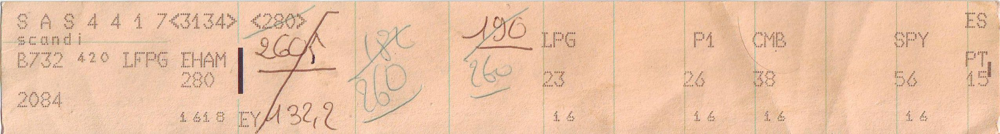

Bay 1
The fact that expired
A record that is still on the board but will not sit flush.
Throughline is an on-call agent that answers from what it remembers, and hands you the paperwork every time. Three things go wrong silently in every other memory layer. This board is those three things, made physical.

Controllers kept these long after the screens arrived. The strip was the legal record of what was actually said, written while it was happening, by people who could not afford to trust their own recall.
An agent's memory has the same job and almost never does it. A vector store returns a sentence with no idea whether it is still true, no record of who asserted it, and no way to say "I did not actually check".
this is the lineage.ContentFailover runs from the standby in us-east-2
Freshness0.13
KindRUNBOOK FACT
Half-life90 d
End dated15 APR 2026
StateSuperseded
ContentFailover runs from the standby in eu-west-1
Freshness0.43
KindRUNBOOK FACT
Valid from15 APR 2026
Supersedesmem_7f31c2
StateCocked
Past one half-life for its kind, a record is returned flagged rather than dropped, because a stale fact you can see is safer than one that vanished. The row it replaced stays queryable with its end date. Nothing is overwritten, ever.
Bay 2
The search that never ran
An empty holder is information. It is not the same as an empty result.
Refusal slip · 02:31:07
NO SEARCH RAN. VERDICT: UNKNOWN.
The embedding provider timed out at 2,004 ms, so 0 of 4,102 rows were read. Nothing was excluded, because nothing was examined. The agent is blocked from turning this into "no prior incidents".
QUERY standby region, failover
PATH none
READ 0 of 4,102
ELAPSED 2,004 ms
STOPPED BY embedder_unreachable
CANDIDATE CAP 200, unused
What everyone else returns"I found nothing relevant about the standby region."
Rows actually read0
BackingUnbacked
Absence of a result is not absence of a fact. Every recall carries a coverage verdict of COVERED, PARTIAL or UNKNOWN, and UNKNOWN is the one the agent cannot launder.
Bay 3
The eviction that ate the newest entry
Every sweep publishes what it removed and what it refused to touch.
WasRestarting the ingest pod cleared the backlog on 14 Feb
Freshness0.02
Removed02:58:44
Age169 d
Unread for134 d
StateWithdrawn
Refused · 3 entries inside the 24 hour grace window
ContentIt was not the CDN. We lost forty minutes proving that in March.
Freshness0.75
KindREJECTED HYPOTHESIS
Half-life365 d
SourceINC-2291
StateProtected
The entry with no usage history is the one that arrived an hour ago, so a store that evicts by score alone throws away the incident most likely to recur. Protection is stamped at write time by the policy that wrote the row, so no later policy can quietly un-protect it. Removal writes a tombstone, and a rejected hypothesis outlives everything else on the board because knowing what did not work is half of an incident archive.
Bay 4
Active
Live strips, posting from the cluster this page is reading right now.
Contentp99 on checkout is 4.2 s, eu-central-1 only
Freshness1.00
KindOBSERVATION
Asserted byilse
IncidentINC-3310
Protected24 h